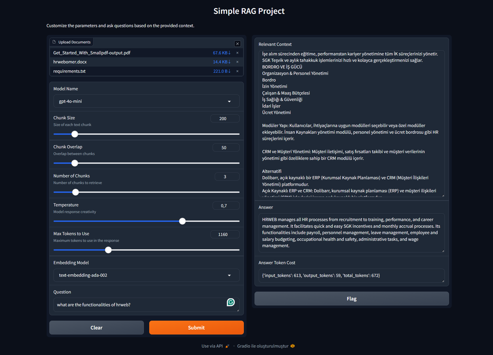
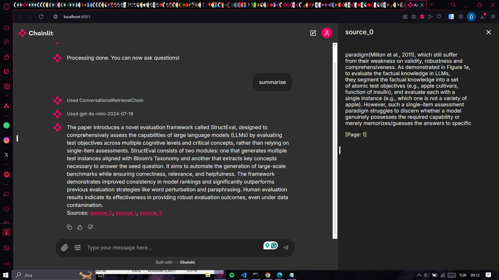
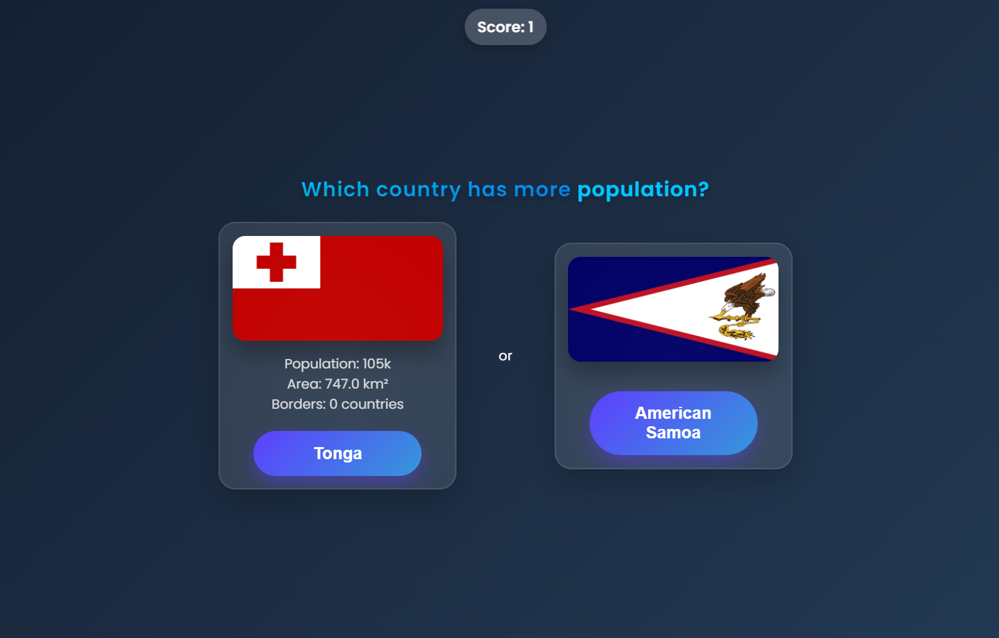

About Me
I am a Computer Science student at Istanbul University-Cerrahpasa (graduating September 2025) with expertise in artificial intelligence, software development, and game development. Through internships at GoLive and Carbon Consulting, I've developed production-ready RAG systems, optimized LLM performance, and built automated testing frameworks that significantly improved system accuracy.
My technical foundation spans machine learning implementation, cloud deployment with AWS and Docker, game systems design in Unity, and CI/CD pipeline development. I am fluent in Turkish (Native), English (Advanced) with basic French proficiency.
Education
Istanbul University - Cerrahpasa | Computer Science
İstanbul, Turkey | 2020 - Expected September 2025
- Core CS curriculum with strong focus on software engineering and AI.
Technical Expertise
Programming Languages
- Python, C#, Java, C++, SQL
AI & Machine Learning
- Large Language Models (GPT, LLaMA)
- Retrieval Augmented Generation (RAG)
- Vector Databases (FAISS, Chroma)
- Prompt Engineering & Optimization
Game Engines & Tools
- Unity 3D/2D (Advanced), Unreal Engine 4/5 (Beginner)
- Plastic SCM
Game Development
- Weapon Systems, Enemy AI, Player Progression
- Perk & Ability Systems, Game Economy Balancing
- Level Design, Performance Optimization
- UI/UX for Games, Cross-platform Development
- OOP, Design Patterns (Factory, Singleton, Observer), Scriptable Objects
Backend & DevOps
- Docker, AWS EC2, GitHub Actions (CI/CD)
- APIs, Redis, SQL Databases
- Testing & Automation (Selenium, Postman)
- Linux & Bash Scripting
AI, NLP & Software Engineering
Developing production-ready AI systems with focus on document processing, conversational AI, and intelligent automation.

Advanced Document Processing & Retrieval
August-September 2024
- Built RAG solutions using Python, LangChain and OpenAI GPT models.
- Gradio UI with customizable NLP settings and FAISS-based vector search.
- Optimized multi-format document handling (PDF, DOCX, TXT) with robust chunking and caching.

Document QA Chatbot with Source Attribution
August-September 2024
- Chainlit chatbot with document-specific source referencing using Chroma vector storage.
- Context-aware QA with optimized prompting; deployed on AWS EC2 with Docker.
- End-to-end CI/CD using GitHub Actions for automated testing and deployment.

Which Country? - Educational Quiz
March 2024
- Web-based educational quiz using REST Countries API.
- Responsive UI with interactive flag displays and transitions.
- Leaderboards and persistence with SQLAlchemy.
Game Development & Design
Procedural systems, engaging mechanics, and scalable architecture.

🎮 HELLRAZE – Roguelike FPS
Released • Actively Maintained
- Awarded "Best Technical Implementation" at 2025 Game Development Project Days (IUC CE).
- Replayable, procedurally generated FPS inspired by boomer shooter genre (Unity 3D).
- Procedural dungeon generation with varied room layouts and enemy placements.
- Multiple weapon systems (revolver, shotgun, machine gun, flamethrower, melee, plasma gun, grappling hook).
- Meta-progression and in-game upgrade economy; advanced perk and ability systems.
- Boss fights using state machines and performance-optimized enemy AI.
- Regular development updates and gameplay videos on YouTube.
Educational Game for Children with Special Needs
Released Project
- Four core game types (matching, object selection, sequencing daily routines) with three difficulty levels and nine categories.
- ScriptableObject-based modular data system for scalable content; optimized assets, color configs, audio layers and animations.
- Real-time analytics and teacher dashboard for performance tracking with JSON-based persistent storage.

Neon Ascent
April-May 2024
- 2D platformer with pixel art aesthetics and high-score mechanics.
- Released on HTML5 and Android with performance optimizations.
- Iterated via player feedback to refine core mechanics.
Experience
Carbon Consulting - Intern (Part-time)
İstanbul, Turkey | December 2024 - March 2025
- Worked on an SAP-integrated HR chatbot for Microsoft Teams; collaborated across teams to ensure SAP integration functionality.
- Developed automated test system with Selenium, implementing robust scenarios and error handling.
- Engineered prompt optimizations, improving on-behalf detection accuracy from 70.3% to 94.5%.
- Created context-aware datetime extraction prompts with relative time references, increasing accuracy from 44% to 70% on LLaMA.
- Built a multi-stage intent detection system for disambiguation and UX improvements.
- Documented issues in GitLab; stack: Python, Selenium, Microsoft Teams API, Docker, Redis, Postman, various LLM APIs.
GoLive - Intern (Full-time)
İstanbul, Turkey | August-September 2024
- Developed RAG solutions using Python, LangChain, Chainlit, OpenAI API, PyMuPDF.
- Deployed on AWS EC2 using Docker; implemented CI/CD with GitHub Actions.
IEEE Computer Science Subbranch - Active Member
İstanbul, Turkey | September 2022 - January 2023
- Contributed to organizing events and workshops aimed at enhancing members' skills in computer science.
- Participated in game development workshops.